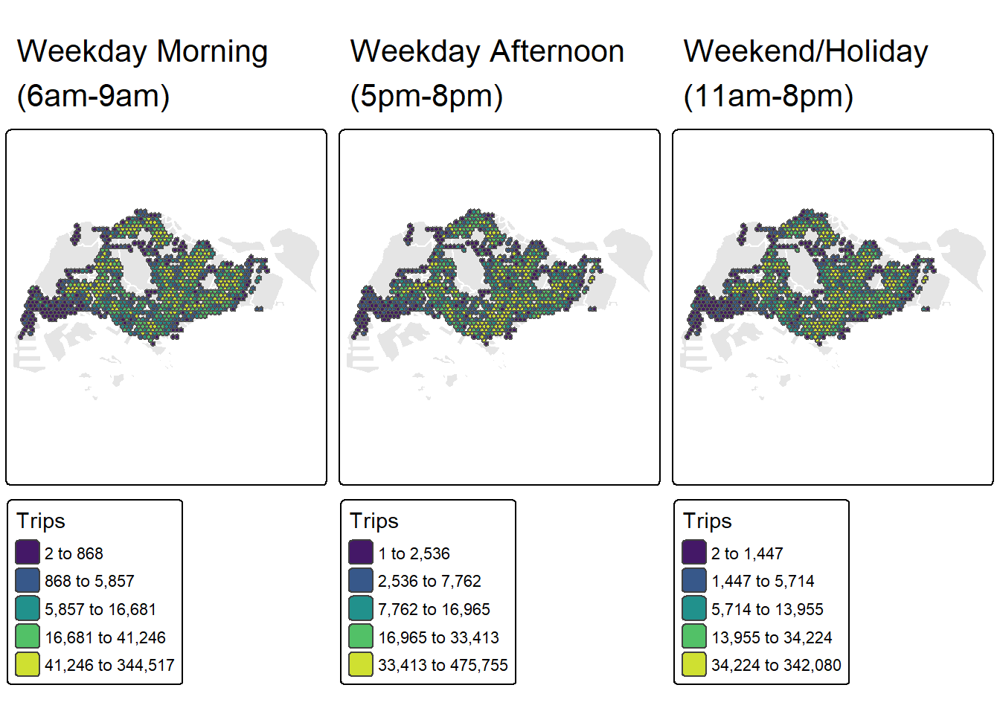
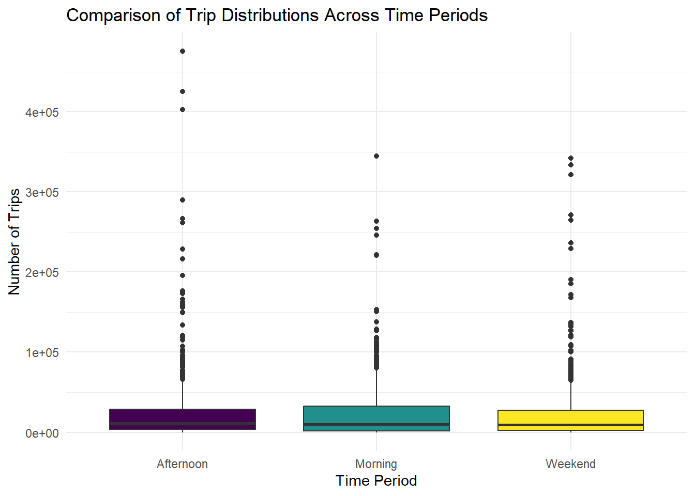

pacman::p_load(tidyverse, sf, sfdep, tmap, knitr, kableExtra, DT)Take home exercise 2
1 Introduction
2 Loading the R package
3 Data Importing and Wrangling
Importing Data
#Bus Stop Location
BusStop = st_read(dsn = "data/LTADataMall/",
layer = "BusStop") %>%
st_transform(crs = 3414)Reading layer `BusStop' from data source
`C:\Users\tqy87\OneDrive\Documents\natsutai66\ISSS626-qiuyan\TakeHome_Ex\TakeHome_Ex02\data\LTADataMall'
using driver `ESRI Shapefile'
Simple feature collection with 5172 features and 2 fields
Geometry type: POINT
Dimension: XY
Bounding box: xmin: 3970.122 ymin: 26482.1 xmax: 48285.52 ymax: 52983.82
Projected CRS: SVY21#Master Plan 2019 Subzone
mpsz = read_rds("data/rds/mpsz_sf.rds")
#O-D Bus Trips
odbus <- read_csv("data/LTADataMall/origin_destination_bus_202508.csv")Extracting Bus Stops located within Singapore
BusStop_in_SG <- st_join(
BusStop, mpsz,
join = st_within,
left = FALSE)Visualize
tm_shape(mpsz) +
tm_polygons() +
tm_shape(BusStop_in_SG) +
tm_dots()
Deriving Analytical Hexagon
hexagon <- st_make_grid(mpsz,
cellsize = 700,
what = "polygon",
square = FALSE) %>%
st_sf()Selecting hexagons with bus stops
hexagon$busstop_count =
lengths(st_intersects(
hexagon, BusStop_in_SG))
hexagon <- filter(
hexagon, busstop_count > 0)Assigning ids to each hexagon
hexagon <- hexagon %>%
select(, -busstop_count)
hexagon$HEX_ID <- sprintf(
"H%04d", seq_len(
nrow(hexagon))) %>%
as.factor()Preparing Trip Generation Data
trips <- odbus %>%
select(c(ORIGIN_PT_CODE, DAY_TYPE, TIME_PER_HOUR, TOTAL_TRIPS)) %>%
rename(BUS_STOP_N = ORIGIN_PT_CODE) %>%
rename(HOUR_OF_DAY = TIME_PER_HOUR) %>%
rename(TRIPS = TOTAL_TRIPS)
trips$BUS_STOP_N <- as.factor(trips$BUS_STOP_N)Populating Hexagon IDs into BusStop data frame
bs_hex <- st_intersection(
BusStop, hexagon) %>%
st_drop_geometry() %>%
select(c(BUS_STOP_N, HEX_ID))Adding HEX_ID into bus trips data
trips <- inner_join(trips, bs_hex)Aggregating TRIPS based on HEX_ID
trips <- trips %>%
group_by(
HEX_ID,
DAY_TYPE,
HOUR_OF_DAY) %>%
summarise(TRIPS = sum(TRIPS))4 Weekday morning peak
4.1 Overview
Choropleth map of total trips
weekday_morning <- trips %>%
filter(DAY_TYPE == "WEEKDAY", HOUR_OF_DAY %in% 6:8) %>%
group_by(HEX_ID) %>%
summarise(TRIPS = sum(TRIPS), .groups = "drop") %>%
left_join(hexagon, by = "HEX_ID") %>%
st_as_sf()
tmap_mode("plot")
tm_shape(mpsz) +
tm_polygons(col = "grey90", border.col = "white") +
tm_shape(weekday_morning) +
tm_polygons(
fill = "TRIPS",
fill.scale = tm_scale_intervals(
style = "quantile", # Use style = "quantile" instead
n = 5,
values = "viridis"
),
fill.legend = tm_legend(
title = "Total Trips\n(Weekday Morning)",
position = tm_pos_in("right", "bottom")
)
) +
tm_borders(col = "grey40", lwd = 0.5) +
tm_title("Distribution of Bus Trips - Weekday Morning Peak (6am-9am)") +
tm_compass(position = tm_pos_in("left", "top")) +
tm_scale_bar(position = tm_pos_in("left", "bottom"))
Trip Distribution
# Understanding the distribution of trips with improved formatting
library(scales)
# Calculate statistics
mean_trips <- mean(weekday_morning$TRIPS)
median_trips <- median(weekday_morning$TRIPS)
q75 <- quantile(weekday_morning$TRIPS, 0.75)
q95 <- quantile(weekday_morning$TRIPS, 0.95)
# Create improved histogram
ggplot(weekday_morning, aes(x = TRIPS)) +
geom_histogram(bins = 50, fill = "steelblue", color = "white", alpha = 0.8) +
geom_vline(aes(xintercept = mean_trips),
color = "red", linetype = "dashed", size = 1) +
geom_vline(aes(xintercept = median_trips),
color = "orange", linetype = "dashed", size = 1) +
# Add text labels for mean and median
annotate("text", x = mean_trips, y = Inf,
label = paste0("Mean: ", round(mean_trips, 0)),
vjust = 2, hjust = -0.1, color = "red", size = 3.5) +
annotate("text", x = median_trips, y = Inf,
label = paste0("Median: ", round(median_trips, 0)),
vjust = 4, hjust = -0.1, color = "orange", size = 3.5) +
# Format x-axis with comma separators
scale_x_continuous(
labels = label_number(scale = 1/1000, suffix = "k"),
breaks = seq(0, max(weekday_morning$TRIPS), by = 20000)
) +
scale_y_continuous(labels = comma) +
labs(
title = "Distribution of Trip Counts - Weekday Morning Peak (6am-9am)",
subtitle = paste0("n = ", nrow(weekday_morning), " hexagons | 95th percentile: ",
round(q95, 0), " trips"),
x = "Number of Trips",
y = "Frequency (Number of Hexagons)") +
theme_minimal() +
theme(
plot.title = element_text(face = "bold", size = 14),
plot.subtitle = element_text(size = 10, color = "gray40"),
axis.title = element_text(size = 11),
panel.grid.minor = element_blank()
)
4.2 Local Indicators of Spatial Association(LISA)
# Build spatial weights (Queen contiguity)
nb <- st_contiguity(weekday_morning)
wt <- st_weights(nb, style = "W", allow_zero = TRUE)
# Compute Local Moran's I
set.seed(1234)
lisa_morning <- weekday_morning %>%
mutate(local_moran = local_moran(
TRIPS, nb, wt, nsim = 99
), .before = 1) %>%
unnest(local_moran)
# Result
glimpse(lisa_morning)Rows: 900
Columns: 15
$ ii <dbl> 0.4661774, 0.4683093, 0.4587325, 0.4712590, 0.4461214, 0.…
$ eii <dbl> 0.105835988, -0.081630468, 0.003283974, -0.004717771, -0.…
$ var_ii <dbl> 0.22316826, 0.33347305, 0.09289793, 0.20703788, 0.1022641…
$ z_ii <dbl> 0.7627777, 0.9523240, 1.4942948, 1.0460702, 1.5976062, 1.…
$ p_ii <dbl> 0.44559600, 0.34093269, 0.13509857, 0.29552862, 0.1101306…
$ p_ii_sim <dbl> 0.14, 0.04, 0.02, 0.06, 0.02, 0.04, 0.02, 0.02, 0.02, 0.1…
$ p_folded_sim <dbl> 0.07, 0.02, 0.01, 0.03, 0.01, 0.02, 0.01, 0.01, 0.01, 0.0…
$ skewness <dbl> -2.1248431, -2.1138436, -0.6204964, -2.0848165, -1.614755…
$ kurtosis <dbl> 6.293620066, 5.558412985, -0.492666116, 6.905453486, 4.76…
$ mean <fct> Low-Low, Low-Low, Low-Low, Low-Low, Low-Low, Low-Low, Low…
$ median <fct> Low-Low, Low-Low, Low-Low, Low-Low, Low-Low, Low-Low, Low…
$ pysal <fct> Low-Low, Low-Low, Low-Low, Low-Low, Low-Low, Low-Low, Low…
$ HEX_ID <fct> H0001, H0002, H0003, H0004, H0005, H0006, H0007, H0008, H…
$ TRIPS <dbl> 308, 219, 74, 101, 1131, 78, 140, 1223, 114, 4523, 67, 31…
$ geometry <POLYGON [m]> POLYGON ((4067.538 27468.93..., POLYGON ((4417.53…Local Moran’s I values and p-values
ii_map <- tm_shape(mpsz) +
tm_polygons(col = "grey90", border.col = "white") + # base layer
tm_shape(lisa_morning) +
tm_polygons(fill = "ii",
fill.scale = tm_scale_intervals(
style = "pretty",
n = 5,
values = "brewer.RdBu"
),
fill.legend = tm_legend(
title = "Local Moran's I",
position = tm_pos_in("right", "bottom")
)
) +
tm_borders(col = "grey40", lwd = 0.5) +
tm_title("Local Moran's I - morning peak")
p_ii_map <- tm_shape(mpsz) +
tm_polygons(col = "grey90", border.col = "white") +
tm_shape(lisa_morning) +
tm_polygons(fill = "p_ii",
fill.scale = tm_scale_intervals(
breaks = c(-Inf, 0.001, 0.01, 0.05, 0.1, Inf),
values = "-brewer.Reds"
),
fill.legend = tm_legend(
title = "p-value",
position = tm_pos_in("right", "bottom")
)
) +
tm_borders(col = "grey40", lwd = 0.5) +
tm_title("p-values of Local Moran's I")
tmap_arrange(ii_map, p_ii_map, asp = 1, ncol = 2)
Moran scatterplot with standardised variable
lisa_morning <- lisa_morning %>%
mutate(lag_TRIPS = st_lag(
TRIPS, nb, wt),
.before = 1) %>%
unnest(lag_TRIPS)
lisa_morning <- lisa_morning %>%
mutate(z_TRIPS = scale(TRIPS),
z_lag_TRIPS = scale(lag_TRIPS),
.before = 1)
ggplot(data = lisa_morning,
aes(x = z_TRIPS,
y = z_lag_TRIPS,
color = mean)) +
geom_point(size = 2) +
geom_smooth(method = "lm",
se = FALSE,
color = "black") +
geom_hline(yintercept = mean(lisa_morning$z_lag_TRIPS), lty = 2) +
geom_vline(xintercept = mean(lisa_morning$z_TRIPS), lty = 2) +
scale_color_manual(
values = c("High-High" = "red",
"Low-Low" = "blue",
"Low-High" = "lightblue",
"High-Low" = "pink")) +
labs(x = "Standardised TRIPS",
y = "Standardised Spatial Lag of TRIPS",
title = "Standardised Moran Scatterplot with LISA Quadrants") +
theme_minimal()
LISA Map
lisa_sig <- lisa_morning %>%
filter(p_ii < 0.05)
tmap_mode("plot")
tm_shape(mpsz) +
tm_polygons(col = "grey90", border.col = "white") +
tm_shape(lisa_morning) +
tm_polygons(fill = "TRIPS",
fill.scale = tm_scale_continuous(
values = "greys"
),
fill.legend = tm_legend(
title = "Total TRIPS",
position = tm_pos_in("right", "bottom")
)
) +
tm_borders(col = "grey40", lwd = 0.5) +
tm_shape(lisa_sig) +
tm_polygons(fill = "mean",
fill.scale = tm_scale_categorical(
values = c("High-High" = "red",
"Low-Low" = "blue",
"Low-High" = "lightblue",
"High-Low" = "pink")
),
fill.legend = tm_legend(
title = "LISA Quadrants (p < 0.05)",
position = tm_pos_in("left", "bottom")
)
) +
tm_borders(col = "black", lwd = 0.5) +
tm_title("LISA Map - Weekday Morning Peak (6am-9am)")
4.3 Hot Spots and Cold Spots Analysis (HCSA)
Gi* values and p-values
# Compute fixed distance weight matrix
ct <- critical_threshold(st_geometry(weekday_morning))
weekday_morning_fdw <- weekday_morning %>%
mutate(nb = include_self(
st_dist_band(
st_geometry(geometry),
upper = ct)),
wt = st_weights(nb,
style = "W"),
.before = 1)
# Compute local Gi*
set.seed(1234)
HCSA_fdw <- weekday_morning_fdw %>%
mutate(
gistar = local_gstar_perm(
TRIPS, nb, wt, nsim = 99),
.before = 1) %>%
unnest(gistar)
# Plot Gi* values
Gi_star_map <- tm_shape(mpsz) +
tm_polygons(col = "grey90", border.col = "white") +
tm_shape(HCSA_fdw) +
tm_polygons(fill = "gi_star",
fill.scale = tm_scale_intervals(
style = "pretty",
n = 5,
values = "-brewer.rd_bu"),
fill.legend = tm_legend(
title = "local Gi*",
position = tm_pos_in(
"right", "bottom"))) +
tm_borders(col = "grey40", lwd = 0.5) +
tm_title("Local Gi* of TRIPS")
# Plot p-values
p_values_map <- tm_shape(mpsz) +
tm_polygons(col = "grey90", border.col = "white") +
tm_shape(HCSA_fdw) +
tm_polygons(fill = "p_sim",
fill.scale = tm_scale_intervals(
breaks = c(0, 0.001, 0.01, 0.05, 0.1, 1),
values = "-brewer.reds"),
fill.legend = tm_legend(
title = "p-value",
position = tm_pos_in("right", "bottom"))) +
tm_borders(col = "grey40", lwd = 0.5) +
tm_title("p-values of local Gi* of TRIPS (Fixed distance)")
# Display both maps side by side
tmap_arrange(Gi_star_map, p_values_map, asp = 1, ncol = 2)
HCSA Map
# HCSA cluster classification
HCSA_fdw <- HCSA_fdw %>%
mutate(HCSA_cluster = case_when(
p_sim > 0.05 ~ "Insignificant",
p_sim <= 0.05 & cluster == "High" ~ "Hot spot",
p_sim <= 0.05 & cluster == "Low" ~ "Cold spot",
TRUE ~ "Other"),
HCSA_cluster = factor(
HCSA_cluster,
levels = c("Insignificant", "Hot spot", "Cold spot")
),
.before = 1
)
# Plot HCSA cluster map
HCSA_map <- tm_shape(mpsz) +
tm_polygons(col = "grey90", border.col = "white") +
tm_shape(HCSA_fdw) +
tm_polygons(
fill = "HCSA_cluster",
fill.scale = tm_scale_categorical(
values = c(
"grey80", # Insignificant
"red", # Hot spot
"blue" # Cold spot
)
),
fill.legend = tm_legend(
title = "HCSA Cluster",
position = tm_pos_in("right", "bottom"))
) +
tm_borders(col = "grey40", lwd = 0.5) +
tm_title("HCSA Clusters (p < 0.05)")
# Gi* map and HCSA map
tmap_arrange(Gi_star_map, HCSA_map, asp = 1, ncol = 2)
Emerging Hot Spot Analysis (EHSA)
comparasion
# Prepare data for all three periods
weekday_afternoon <- trips %>%
filter(DAY_TYPE == "WEEKDAY", HOUR_OF_DAY %in% 17:19) %>%
group_by(HEX_ID) %>%
summarise(TRIPS = sum(TRIPS), .groups = "drop") %>%
left_join(hexagon, by = "HEX_ID") %>%
st_as_sf()
weekend <- trips %>%
filter(DAY_TYPE %in% c("WEEKENDS/HOLIDAY"), HOUR_OF_DAY %in% 11:19) %>%
group_by(HEX_ID) %>%
summarise(TRIPS = sum(TRIPS), .groups = "drop") %>%
left_join(hexagon, by = "HEX_ID") %>%
st_as_sf()
# Create comparative maps
morning_map <- tm_shape(mpsz) +
tm_polygons(col = "grey90", border.col = "white") +
tm_shape(weekday_morning) +
tm_polygons(fill = "TRIPS",
fill.scale = tm_scale_intervals(
style = "quantile",
n = 5,
values = "viridis"
),
fill.legend = tm_legend(title = "Trips")) +
tm_borders(col = "grey40", lwd = 0.5) +
tm_title("Weekday Morning\n(6am-9am)")
afternoon_map <- tm_shape(mpsz) +
tm_polygons(col = "grey90", border.col = "white") +
tm_shape(weekday_afternoon) +
tm_polygons(fill = "TRIPS",
fill.scale = tm_scale_intervals(
style = "quantile",
n = 5,
values = "viridis"
),
fill.legend = tm_legend(title = "Trips")) +
tm_borders(col = "grey40", lwd = 0.5) +
tm_title("Weekday Afternoon\n(5pm-8pm)")
weekend_map <- tm_shape(mpsz) +
tm_polygons(col = "grey90", border.col = "white") +
tm_shape(weekend) +
tm_polygons(fill = "TRIPS",
fill.scale = tm_scale_intervals(
style = "quantile",
n = 5,
values = "viridis"
),
fill.legend = tm_legend(title = "Trips")) +
tm_borders(col = "grey40", lwd = 0.5) +
tm_title("Weekend/Holiday\n(11am-8pm)")
tmap_arrange(morning_map, afternoon_map, weekend_map, ncol = 3)
Boxplot
# Combine all three periods
all_periods <- bind_rows(
weekday_morning %>% st_drop_geometry() %>% mutate(Period = "Morning"),
weekday_afternoon %>% st_drop_geometry() %>% mutate(Period = "Afternoon"),
weekend %>% st_drop_geometry() %>% mutate(Period = "Weekend")
)
ggplot(all_periods, aes(x = Period, y = TRIPS, fill = Period)) +
geom_boxplot() +
scale_fill_viridis_d() +
labs(title = "Comparison of Trip Distributions Across Time Periods",
y = "Number of Trips",
x = "Time Period") +
theme_minimal() +
theme(legend.position = "none")